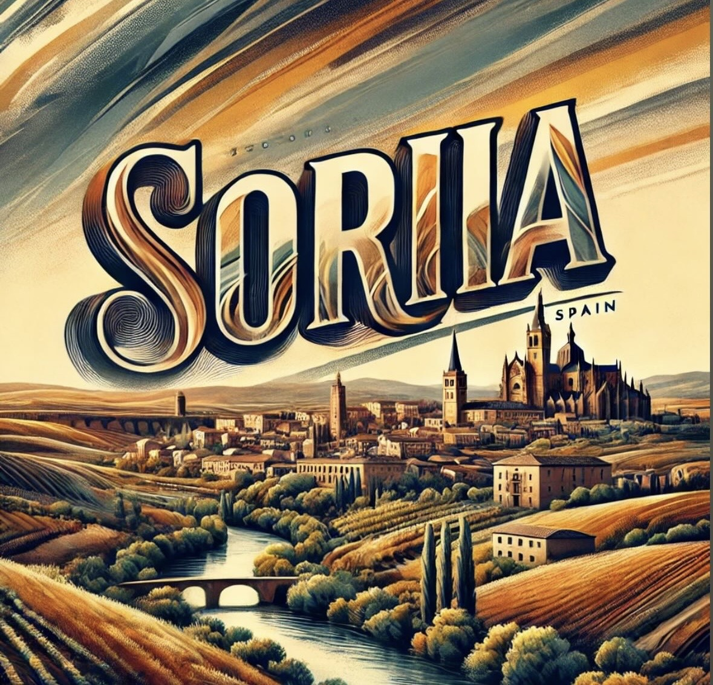

Soria es una provincia del sureste de Castilla y León que cuenta con un total de 183 municipios.
Limita al norte con La Rioja, al este con Zaragoza y Guadalajara, al sur con Segovia y al oeste con Burgos y Valladolid.
Es una de las provincias más orientales de la comunidad y la menos poblada, con un paisaje caracterizado por montañas, bosques y amplias llanuras.
Sus 183 municipios tienen una población total aproximada de 89.528 habitantes según datos del INE.
Soria, cuenta con 183 municipios, lo que la sitúa en el puesto 22 entre las provincias con más municipios de España.
Es la provincia con menor densidad de población de España.
Gran parte del territorio está cubierto por bosques, montañas y paisajes naturales.
Una comarca agrícola con paisajes abiertos y pueblos históricos.
Ver todos los pueblosZona histórica alrededor de El Burgo de Osma.
Paisajes naturales con ríos y pueblos tradicionales.
Comarca de transición entre montañas y valles, con ríos dehesas y pueblos tradicionales rodeados de naturaleza.
Comarca histórica atravesada por el río Duero, con campos agrícolas, patrimonio medieval y una fuerte tradición rural.
Territorio de historia y arquitectura monumental, dominado por la villa de Berlanga de Duero y su impresionante castillo.
Comarca cercana a la capital soriana, caracterizada por pequeños pueblos, paisajes abiertos y tranquilidad rural.
Región marcada por la presencia del Moncayo, con paisajes montañosos, bosques y una gran riqueza natural.
Amplias llanuras agrícolas con pueblos históricos y un paisaje característico del sur soriano.
Comarca de gran valor histórico, con Medinaceli como referente y un importante patrimonio romano y medieval.
Una de las zonas más despobladas y salvajes de la provincia, con montañas, extensos paisajes naturales y pueblos con gran tradición ganadera.
Este proyecto también está en Instagram donde se publican curiosidades, lugares y paisajes de la provincia.
@soriainimaginable